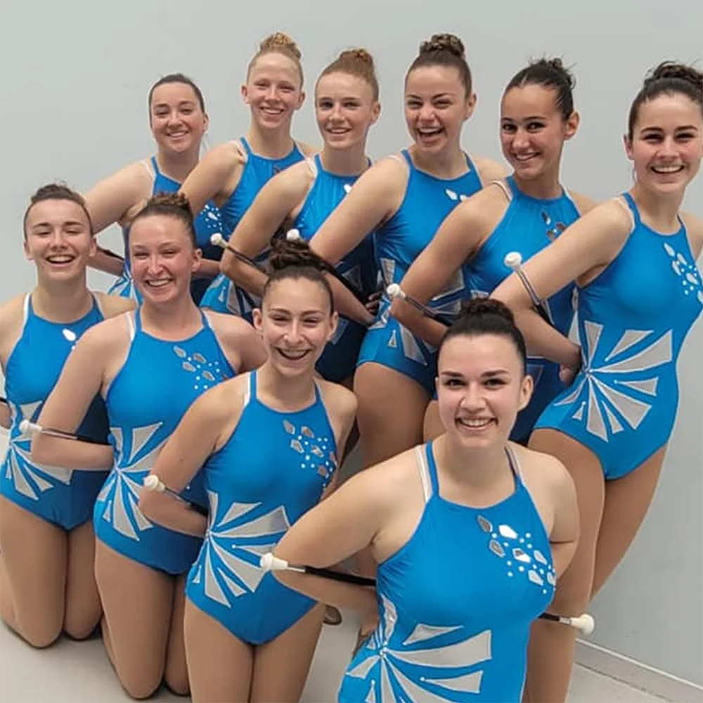

Les catégories
Les diverses catégories du twirling offrent des opportunités de compétitions adaptées à l'âge (Poussin, Benjamin, Minime, Cadet, Junior, Senior) et au niveau de compétence (Espoir, Honneur, Excellence, Excellence sup. et Grand prix). Ces catégories permettent aux twirleurs de participer dans des groupes correspondant à leur âge et à leur expérience, assurant ainsi une compétition équitable et stimulante.
Plus d'infos
Les coachs

Rencontrez notre équipe dévouée de coachs passionnés du Twirling Club Macairois qui guident nos twirlers vers le meilleur d'eux-mêmes. Chaque coach apporte son expertise, sa passion et son engagement, contribuant ainsi au développement des compétences individuelles et collectives de nos membres. Découvrez leur profil unique et apprenez à connaître les personnes qui inspirent nos twirleurs à atteindre de nouveaux sommets.
Voir les coachs
Important
Les cours ne sont pas dispensés pendant les vacances scolaires, à l'exception des stages ou entraînements spécifiques.
Les lieux d'entraînement peuvent être modifiés en fonction des besoins, soyez attentifs aux communications.
Consacrer du temps à la pratique individuelle chez soi est recommandé pour progresser.
La ponctualité et l'assiduité aux entraînements sont essentielles. En cas d'absence, veuillez prévenir à l'avance.
La participation à toutes les compétitions est obligatoire.
Une tenue et une coiffure adaptées sont requises (short ou leggings, t-shirt ou débardeur, chaussures de danse, chaussettes, cheveux attachés, aucun bijou ou accessoire gênant).
L'utilisation du téléphone portable pendant l'entraînement n'est pas autorisée.
N'oubliez pas le bâton et la gourde ! Prêts pour l'action ? Let's twirl ! 🌟